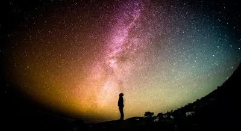

¿Que es Desarrollo Full Stack?

El Desarrollo Full-Stack es un enfoque de desarrollo web que implica el desarrollo de ambas partes de una aplicación web: el frontend y el backend.
El frontend es la parte de la aplicación que los usuarios ven y usan, mientras que el backend es la parte de la aplicación que se ejecuta en el servidor y se encarga de procesar los datos y generar la salida.
¿Como funciona?

El Desarrollo Full-stack es necesario para crear una aplicación web que pueda interactuar con usuarios de diferentes planetas y conductores espaciales.
- El frontend de la aplicación web debe ser capaz de mostrar información sobre los diferentes planetas y conductores espaciales.
- El backend de la aplicación web debe ser capaz de procesar las solicitudes de los usuarios y generar la salida correspondiente.
Viajes turisticos espaciales
El turismo es, sin lugar a duda, una de las actividades más importantes y relevantes en la actualidad. Año tras año, cada vez más las personas enfocan su ritmo de vida de una manera en la que viajar es una prioridad. A la gran mayoría de la gente nos encanta viajar y poder tener la posibilidad de conocer nuevos lugares y culturas, y explorar otros horizontes.
Una de ellas es el turismo espacial, una de las tendencias del turismo que ha crecido en los últimos años.